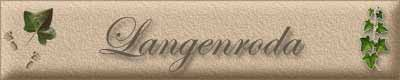

|
|
|
Kirche
Dorfstraße
Gedenkstein
alte Panoramaansicht
|

aus dem verlorengegangenen Kirchenbuch von Langenroda: Langenroda liegt, etwas versteckt, in einem tief eingeschnittenen Tälchen der Hohen Schrecke, der nördlichen Gabelung der Finne. Von den Höhen am sogenannten "Schießplatz", 324 m über NN, genießt man wunderschöne Ausblicke über das mittlere Unstruttal und den Ziegelrodaer Forst auf der Querfurter Platte. Der im Tal gelegene Bahnhof Donndorf der Bahnstrecke Artern-Naumburg liegt auf einer Höhe von 121 m über NN. Im Westen erblickt man den Kyffhäuser mit seinem Denkmal, im Osten den Wendelstein über der alten Kaiserpfalz Memleben. Der Rankestein am Waldrande, der 1887 auf dem Besitz der Familie Ranke errichtet ist, erinnert mit seiner Inschrift an die große geschichtliche Vergangenheit dieser Gegend. Nur wenige Kilometer von Langenroda entfernt ist auf dem Abhang der Hohen Schrecke der Schlachtberg, der mit der Ungarnschlacht von 933 in Verbindung gebracht wird. Das Dorf besteht praktisch nur aus der 1 1/2 km langen Dorfstraße. Es wird in seiner ganzen Länge von dem Langenbach durchflossen. Der Bach entspringt im Langental am Bumberg. Oberhalb des Dorfes ist er zu einem Feuerlöschteiche gestaut, der der Jugend auch zum Baden dient. In der Rinne der gepflasterten Dorfstraße sind in kurzen Abständen Schöpflömer eingelassen. Die Wasserversorgung ist immer noch ein Problem des Ortes. Einige Brunnen sind 30 m tief in den Sandstein gebohrt. Die Bauerngehöfte sind typisch fränkisch-thüringisch, mit dem Fachwerkgiebel zur Straße. Der Eingang befindet sich auf der Hofseite. Eine Besonderheit für Langenroda waren die gemauerten Backhäuser, die mit Reisig beheizt wurden. Jetzt sind sie außer Betrieb und durch Elektroherde ersetzt. Zu den Besonderheiten Langenrodas gehört wohl auch noch das Gemeindebrauhaus. Bisher konnte ich der Literatur und den mir zugänglichen Akten nur entnehmen, dass die Schenkgerechtigkeit wechselte. Ausgeschenkt wurde in den Häusern der jeweilig Berechtigten. Dort wurde sogar getanzt. In dem Geburtshause meiner Frau, das 1806 erbaut wurde, heißt eine jetzt durch Bretterwände unterteilte Stube noch immer der "Tanzsaal". An Schenken, stellte im aus dem 2. Kirchenbuche fest: 1721 Johann Wilhelm Nolle, 1758 Johann Caspar Brückner, 1775 Johann Andreas Hartwig, 1779 Johann Gottfried Zeugner, 1790 Johann Christoph Jäger und 1806 Friedrich Kurzhals. 1871 kaufte ein Vorfahr des Gastwirts Hermann Ehrlich das Gemeindebrauhaus und gestaltete es zum jetzigen Dorfgasthaus um. Aus dem einstigen Hirtenhause wurde später das Armenhaus. Es ist jetzt Privatbesitz. Die Kirche liegt in der Dorfmitte auf einem Hange. Sie ist, wie der sie umgebende Friedhof, auf breiten Sandsteinstufen zugänglich. Die Abhänge hinter den Gärten der Gehöfte trugen früher Wein, jetzt Obstbäume, vor allem Kirschbäume. Daher nannte sich Langenroda einmal auf einer Postkarte "Baumdorf". Das Kirchensiegel zeigt eine Linde. Der Wald auf den Höhen ist Mischwald, vorherrschend sind Buchen und Fichten. Wie der Name sagt, ist Langenroda eine Rodung. In seiner Geschichte des Kreises Eckartsberga sagt Superintendent L. Naumann von der Kirche in Langenroda: "Ihre Gründung dürfte vom Kloster Donndorf oder seinen Schutzherren ausgegangen sein." Das wird wohl auch für die Rodung zutreffen. Es soll deshalb kurz auf das Zisterzienser-Nonnenkloster Donndorf und seine Schutzherren, die Besitzer der Herrschaft Wiehe, eingegangen werden. Das Dorf Donndorf ist bereits 780 im Brevarium Lulli erwähnt. Er gehörte seit alten Zeiten zur Herrschaft Wiehe. Mit dieser hat es ebenso wie Langenroda politisch das gleiche Schicksal bis zur Gegenwart geteilt. Landschaftlich gehört die Gegend zu Thüringen. Seit der Zerstörung des Thüringer Reimes 531 stand sie unter sächsischer Oberherrschaft. Unter den Sachsenkaisern gehörte sie zu deren Lieblingssitzen. Kaiser Otto I. ist im nahen Wallhausen geboren. Er und sein Vater Heinrich starben im nahen Memleben. Kaiser Heinrich 111. (1039-1056) verlieh die Herrschaft Wiehe den Grafen von Kevernburg (Käfernburg). Graf Sizzo starb 1039, Günther ist urkundlich 1045 erwähnt. Ein 1162 erwähntes "praedium Sizzonis" vermutet Naumann in der Nähe des heutigen Langenroda. Die Kevernburger gelten als die Gründer des Klosters Donndorf. Eine Gründungsurkunde dieses Klosters kennt man nimmt. König Konrad 111. bestätigte 1250 die Gründung. Wie Kühlenz schreibt, sollen im Klostergarten tief in der Erde Mauerreste einer befestigten Wohn- und Wehranlage gefunden worden sein, die auf den Grafen Sizzo zurückgeführt werden. Ich halte es für möglich, dass Graf Albrecht von Wiehe, der zwischen 1233 und 1237 die Burg Rabinswalde erbaute, in diese umsiedelte und die Burg Donndorf zum Kloster umgestaltete. Das Kloster wurde mit Besitz in Donndorf und den beiden Rodungen Langenroda und Wenigenroda, jetzt Kleinroda, ausgestattet. Die Flur der Rodung war nicht sehr groß. Naumann gibt für 1822 103/4 Hufen an. Die Bauern von Langenroda hatten deshalb, um Vollbauern zu werden, Äcker in den Gemarkungen Donndorf und Hechendorf, Wiesen an der Unstrut aus der Flur Wiehe und Waldbesitz bis an die Ruine Rabinswalde. Urkundlich wird Langenroda erstmals im Jahre 1312 genannt. Damals schenkte Graf Hermann von Orlamünde, der die Erbtochter Mechthild des 1312 gestorbenen Grafen Friedrich geheiratet hatte, dem Kloster Pforta 18 Acker in pago sub villa Langenroda. Pforta war schon 1144 durch König Konrad III. in den Besitz von Hechendorf gekommen. Mindestens seit 1312 besteht also die Teilung des Dorfes Langenroda in einen Donndorfer und einen Hechendorfer Anteil. Der Anteil des Klosters Donndorf lag links des Langenbaches, der Anteil des Klosters Pforta rechts. Pforta hatte das bereits 786 erwähnte Dorf Hechendorf eingehen lassen und zu einer "Grangia", einem Meierhof, umgestaltet. Aus der Urkunde Nr. 627 vom Juni 15257 geht hervor, dass Hechendorf nicht selbst ein Kloster gewesen ist, wie es nach Naumann9 Leopold von Ranke irrtümlich behauptet hat. Ranke hat als Quelle dafür höchstwahrscheinlich die Kirchenbücher von Langenroda und Donndorf genommen. In Donndorf wird bereits kurz nach 1593 als Pate ein Schulze vom "Kloster" Hechendorf genannt. Der ortsfremde Pfarrer hat dabei sicherlich die unkritische Meinung der Bevölkerung übernommen. Im Kirchenbuch von Langenroda ist 1768 ein Pate August Schubert als Pächter des "Klosters" Hechendorf bezeichnet. Auch die Großmutter Leopold von Rankes, Magdalena Sophie Eberhard, und ihre Geschwister hatten Patenschaften in Langenroda, ebenso die Schwester Leopolds. Der Familie Eberhard gehörte ein Meierhof in Hechendorf. Die Nachkommen Leopold von Rankes haben bis in die Gegenwart Besitz in Hechendorf und Beziehungen nach Langenroda. Natürlich beteiligten sich 1525 auch die Hörigen des Klosters Donndorf aus Langenroda an der Plünderung. Von Langenroda waren 18 Mann in der Schlacht bei Frankenhausen beteiligt Langenroda musste auf Anordnung des Herzogs Georg von Sachsen 193 Gulden Strafgeld an das Kloster zahlen. Die Grafen von Orlamünde hatten nach dem Thüringer Grafenkrieg im Sühnevertrag von 1347 die Oberherrschaft des Landgrafen Friedrich von Thüringen anerkennen müssen. Nach dem Tode des letzten Orlamünders Hermann 1372 kam die Herrschaft Wiehe erblich an die Landgrafen. Diese belehnten damit nacheinander verschiedene Geschlechter, so die Edlen von Querfurt, die Heldrunger, die Hohnsteiner, die Beichlinger, die Schwarzburger. 1452 kam die Herrschaft durch Kauf an die Herren von Werthern. Diese bestimmten, unter der Oberlehns- und Landesherrschaft der Wettiner stehend, nun mehrere Jahrhunderte auch die Geschicke der Menschen von Langenroda. In der wettinischen Teilung von 1485 war Langenroda zum Territorium der Albertiner gekommen. Die Reformation wurde 1540 nach dem Tode des Herzogs Georg von Sachsen eingeführt, der ein großer Gegner Martin Luthers gewesen war. Die Nonnen des Klosters Donndorf ließ man aussterben, die letzte, Felicitas von Hacke, starb am 12. 7. 1561, der Sage nach an einem Blitzschlag. Die Herren von Werthern richteten im Kloster eine Schule für 12 Schüler ein. Da auch im Kloster Pforta eine Schule eingerichtet wurde, leisteten die Einwohner von Langenroda nun für 2 Schulen Frondienste. Die Schule in Kloster Donndorf wurde zu einer Art Vorschule, vor allem für Schulpforta. So war auch Leopold von Ranke zunächst Schüler in Donndorf und anschließend in Schulpforta. über das Schicksal von Langenroda im 30jährigen Kriege habe ich bisher wenig in Erfahrung bringen können. Im Kirchenbuche war verzeichnet, dass 1640/41 mehrere Einwohner von "den Kaiserlichen" erschlagen wurden. In der Familienbibel eines Verwandten meiner Frau, einer sogenannten "Kurfürstenbibel", fand ich eine Eintragung, die aus dem Kirchenbuche Donndorf stammen soll: "Anno 1646, den 27. März, war die hiesige Klosterkirche zu einem Stein- und Aschenhaufen gemacht, wie auch das ganze Schulgebäude von einem schwedischen Obersten, Hasa genannt, und das ganze Tal geplündert worden. Vom Jahr 1641 an hat die Schule wüst gelegen bis zum Jahre 1670, da ist sie wieder errichtet worden. Anno 1670 ist die Schule wieder mit 6 Knaben besetzt worden, aber 1676 ist sie wieder eingegangen bis 1690, da ist sie wieder völlig instand gekommen." Abgesehen von Pestjahren scheint Langenroda durch seine versteckte Lage besser davongekommen zu sein als die Nachbarorte. Während es ich Donndorf verwüstete Höfe gab, sagte das alte Kirchenbuch nichts über Verwüstungen und Brandschäden; lediglich von einer Vergewaltigung wurde in einem Taufeintrag berichtet. Aus Sterbeeintragungen von Personen aus Nachbarorten kann man schließen, dass Langenroda Zufluchtsort war. 1631 heiratete der Werthersche Befehlshaber von Rastenberg, Bartholomäus Schautanz, die Witwe Schwarzmantel. Bei seinem Tode in Langenroda 1640 heißt er der "alte Schösser". Trotzdem war der "lange Krieg" auch für Langenroda eine bewegte Zeit. Die Nachkommen der Kämpfer des Bauernkrieges hatten anscheinend mit Erfolg versucht, ihre Lasten zu erleichtern. Nach Eintritt ruhiger Zeiten wurden sie 1664 zu einem Vertrag über von ihnen zu leistende Frondienste gezwungen. Dieser Vertrag ist von Pfarrer Böhme aus Lossa in seinem Urkundenbuch des Klosters Donndorf abgedruckt. Langenroda vergrößerte sich verhältnismäßig langsam. Genaue Einwohnerzahlen standen mir erst ab 1822 zur Verfügung; sie sind auch unten genannt. Einige Rückschlüsse ergeben sich aber aus den Statistiken der geistlichen Amtshandlungen in den Kirchenbüchern von 1599 bis 1810. Das schon erwähnte Buch über Urkunden des Klosters Donndorf von E. Böhme bringt Nachrichten über die Vergrößerung des Hechendorfer Anteils. 1525 waren 5 Höfe angegeben Naumann14 bringt für das Jahr 1822 folgende Angaben: "Langenroda: 67 Häuser und 366 Einwohner. 1. Landgericht Naumburg und Gerichtsamt Wiehe mit 13 Häusern und 77 Einwohnern und 2 1/2 Hufen. 2. Klostergericht Donndorf 54 Häuser, 289 Einwohner und 81/2 Hufen." In der im Anhang abgedruckten Häuserliste von 1770 sind 73 Nummern verzeichnet. Wahrscheinlich waren in der von Naumann nicht angegebenen Quelle die öffentlichen Gebäude nicht mitgezählt, das waren das Gemeindebrauhaus, die Pfarre, die Kirche, die Schule, das Hirtenhaus und der an der Dorfstraße entfernt von der Pfarre liegende Pfarrgarten. Die Zweiteilung des Dorfes ist also erst in der preußischen Zeit aufgehoben worden. Schule und Kirche lagen auf der Donndorfer Seite. Da in der Liste von 1770 auf der rechten Bachseite 33 Häuser gezählt waren, war der Bach nicht bis zum Dorfanfang am Waldrande die Grenze. Die Häuser der im Kirchenbuch genannten Schulzen und Gerichtsschöppen im Hechendorfer Anteil sind in der Häuserliste von 1770 unschwer festzustellen. Nach den Beschlüssen des Wiener Kongresses von 1815 wurde Langenroda preußisch. Preußen bildete aus den von Sachsen abgetretenen Gebieten den Regierungsbezirk Merseburg als Teil der Provinz Sachsen. Langenroda wurde am 1. 10. 1816 dem Kreis Eckartsberga mit der Kreisstadt Kölleda zugeordnet.
|